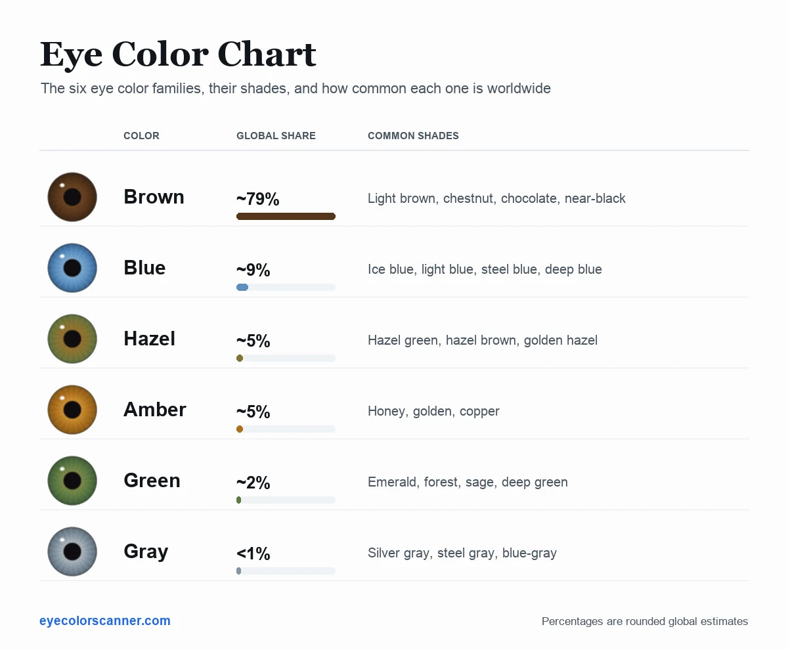
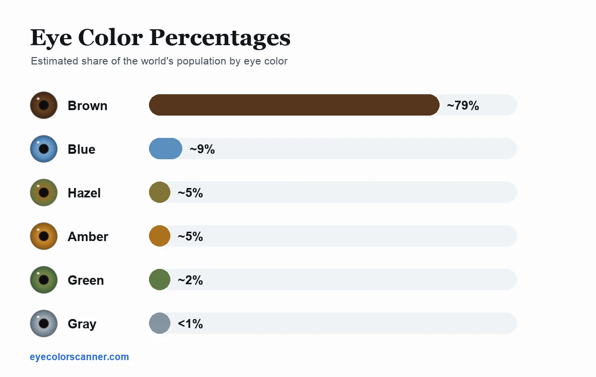
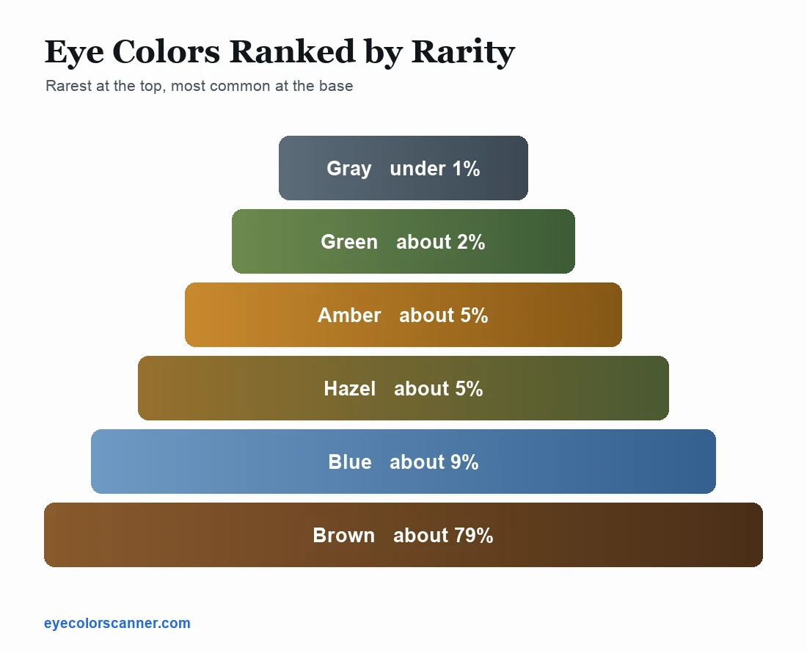

Eye color chart: every color, shade, and percentage
Quick answer: human eye colors fall into six families: brown (most common worldwide), blue (~8–10%), hazel (~5%), amber (~5%), green (~2%), and gray (under 1%). Each family spans many shades, from ice blue to steel blue or from chestnut to near-black brown, because eye color is a spectrum, not a set of boxes. Percentages are rounded estimates; figures vary by study and region.
Every iris gets its color from three ingredients: brown melanin pigment, golden lipochrome pigment, and blue tones from light scattering in the iris structure. More melanin means darker eyes; less melanin lets gold and blue effects show through. The chart below maps the resulting families and their most recognizable shades.
The eye color chart

| Color | Estimated global share | Common shades | What creates it |
|---|---|---|---|
| Brown | Most common; roughly 7–8 in 10 people | Light brown, chestnut, chocolate, dark brown ("black") | Plentiful melanin in the iris's front layer |
| Blue | ~8–10% | Ice blue, light blue, steel blue, deep blue | Very little melanin; blue comes from scattered light |
| Hazel | ~5% | Hazel green, hazel brown, golden hazel | Uneven melanin: dense near the pupil, sparse at the rim |
| Amber | ~5% | Golden, honey, copper | Dominant golden lipochrome pigment |
| Green | ~2% | Emerald, sage, deep green | Low melanin plus lipochrome plus scattered light |
| Gray | Under 1% | Silver gray, steel gray, blue-gray | Minimal pigment with a denser, evenly scattering iris |
All eye colors, listed
The complete list of human eye colors — or eye colours, in British spelling — from the most common to the rarest, including the two appearances that sit outside the six main families.
- Brown — roughly 79% of people. The default setting for the human iris.
- Blue — roughly 9%. No blue pigment involved; it is scattered light.
- Hazel — roughly 5%. Multiple colors zoned across one iris.
- Amber — roughly 5%. A single uniform golden or coppery tone.
- Green — roughly 2%. The rarest of the everyday colors after gray.
- Gray — under 1%. The rarest eye color you will meet in daily life.
- Red or violet appearance — very rare, and not a pigment at all. With severe albinism there is so little melanin that blood vessels behind the iris show through.
- Two different colors (heterochromia) — rare. One iris differs from the other, or a single iris carries two colors in segments.
That is the full list: six families plus two special cases. Anything else you read about, from "purple eyes" to specific celebrity shades, is a variation within one of these. Rare eye colors, ranked goes deeper on the last two.
Eye color percentages
These are rounded global estimates. Regional figures look completely different: blue eyes are a small minority worldwide but a majority in parts of northern Europe, while brown approaches 100% across much of Asia and Africa.

The eye color pyramid
Flip the percentages upside down and you get an eye color pyramid. Gray sits at the narrow top; brown forms the base.

The eye color spectrum
The six families are labels people put on a continuum. There is no line where brown stops and hazel begins; there is one axis running from heavy melanin to almost none, with golden lipochrome layered on top. That is why so many people genuinely cannot tell which box they belong in.
Read left to right, melanin falls away with every step. The warm middle is where lipochrome dominates; the cool right-hand end is almost pure light scattering.
Find your own place on this chart
The free online eye color scanner reads a photo of your iris and names your exact shade, with the pigment mix and hex palette behind it. Nothing is uploaded.
Shades of eye colors
Every family splits into recognizable shades. These are the ones people actually name.
Shades of brown eyes
Brown spans the widest range of any family. Light brown and chestnut eyes show golden warmth in daylight; chocolate brown reads rich and even; very dark brown looks black outside bright light. Truly black irises don't exist; they're dense-melanin brown.
Shades of blue eyes
Ice blue eyes are so light they border on gray; steel blue carries a gray-blue coolness; deep blue holds its saturation even in dim light. Because blue comes from scattered light rather than blue pigment, all blue eyes shift noticeably with lighting.
Shades of hazel eyes
Hazel is defined by zoning rather than one hue. Hazel green rims a golden center with green; hazel brown keeps brown dominant with green edges; golden hazel sits close to amber but still shows multiple zones. The hazel vs green guide explains the boundary case.
Shades of green eyes
Emerald green is vivid and even; sage green is softer and grayer; deep green borders on hazel when gold flecks appear near the pupil.
Shades of gray and amber eyes
Gray runs from bright silver to dark steel, sometimes with a blue or green cast. Amber runs from pale honey to copper; unlike hazel, the color is uniform across the iris.
Where on the chart are your eyes?
Reading a chart is one thing; placing your own iris on it is another, especially for in-between shades like steel blue versus gray, or hazel green versus green. Daylight and a close-up photo help; a scan settles it. Use the online eye color scanner for an instant reading, or start with what color are my eyes? if you would rather do it by eye.
Find your exact shade on the chart
The free Eye Color Identifier app names your shade precisely, like Steel Blue or Emerald Green, from a single photo, with pigment percentages, a rarity score, and a copyable hex palette of your iris.
Frequently asked questions
What is the most common eye color?
Brown, by a wide margin: roughly 7 to 8 in 10 people worldwide.
How many eye colors are there?
Six main families (brown, blue, hazel, amber, green, gray), each spanning many shades on a continuous spectrum. Two rarer appearances sit outside them: the red or violet look of severe albinism, and heterochromia.
What is the rarest eye color?
Gray, at under 1 percent of people, is the rarest of the everyday colors. Green is next at about 2 percent. Rarer still, but not really a color, is the red or violet appearance caused by severe albinism.
What percentage of people have blue eyes?
Roughly 8 to 10 percent globally, with much higher shares in northern Europe.
What percentage of people have green eyes?
About 2 percent worldwide, which makes green the rarest eye color most people will ever meet.
Can eyes be black?
No. Eyes that look black are very dark brown irises with dense melanin.
What is an eye color pyramid?
It is the same six families stacked by how uncommon they are. Gray sits at the narrow top, under 1 percent; green, amber, hazel, and blue fill the middle; brown, at roughly 79 percent, is the base.
Are eye colours the same as eye colors?
Yes. Eye colours is British spelling; eye colors is American. The families do not change: brown, blue, hazel, amber, green, and gray (grey).
Sources
- American Academy of Ophthalmology, Your blue eyes aren't really blue
- MedlinePlus Genetics, Is eye color determined by genetics?